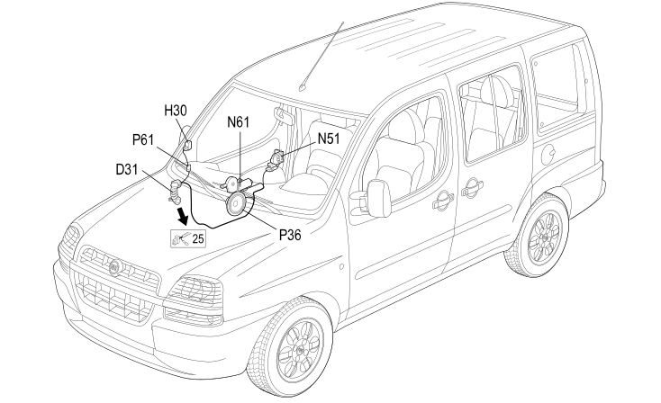

31 FRONT PASSENGER DOOR
- Path
- Electrical equipment > 2 WIRING > 31 FRONT PASSENGER DOOR
- Kind
- wiring harness
- Applies to
- engines: 1.2 8v, 1.6 16v, 1.9 JTD 8V, 1.9 DIESEL; all production periods; only with equipment: Right hand drive
- Interactive page
- https://sloeber94.github.io/elrnDB-fDbl/en/#/223003822
Applies to: engines: 1.2 8v, 1.6 16v, 1.9 JTD 8V, 1.9 DIESEL; all production periods; only with equipment: Right hand drive

Topics that link to this page (16)
- D031 RIGHT FRONT DOOR REAR COUPLING/. (FRONT PASSENGER DOOR)
- D031 RIGHT FRONT DOOR REAR COUPLING/. (FRONT PASSENGER DOOR)
- D31 FRONT RIGHT DOOR CONNECTION ( FRONT PASSENGER DOOR )
- H30 ADJUSTABLE MIRROR CONTROL ( FRONT PASSENGER DOOR )
- H050 ELECTRIC WINDOW SWITCH ON FRONT PASSENGER'S DOOR (FRONT PASSENGER DOOR)
- N051 RIGHT FRONT DOOR LOCK MOTOR (FRONT PASSENGER DOOR)
- N51 RIGHT FRONT DOOR LOCK GEARED MOTOR ( FRONT PASSENGER DOOR )
- N061 FRONT RIGHT ELECTRIC WINDOW MOTOR (FRONT PASSENGER DOOR)
- N061 FRONT RIGHT ELECTRIC WINDOW MOTOR (FRONT PASSENGER DOOR)
- N61 FRONT RIGHT ELECTRIC WINDOW MOTOR ( FRONT PASSENGER DOOR )
- P035 SPEAKER ON FRONT DOOR LEFT (FRONT PASSENGER DOOR)
- P036 SPEAKER ON FRONT RIGHT DOOR (FRONT PASSENGER DOOR)
- P36 SPEAKER IN RIGHT FRONT DOOR ( FRONT PASSENGER DOOR )
- P061 RIGHT DOOR MIRROR (FRONT PASSENGER DOOR)
- P061 RIGHT DOOR MIRROR (FRONT PASSENGER DOOR)
- P61 RIGHT DOOR MIRROR ( FRONT PASSENGER DOOR )